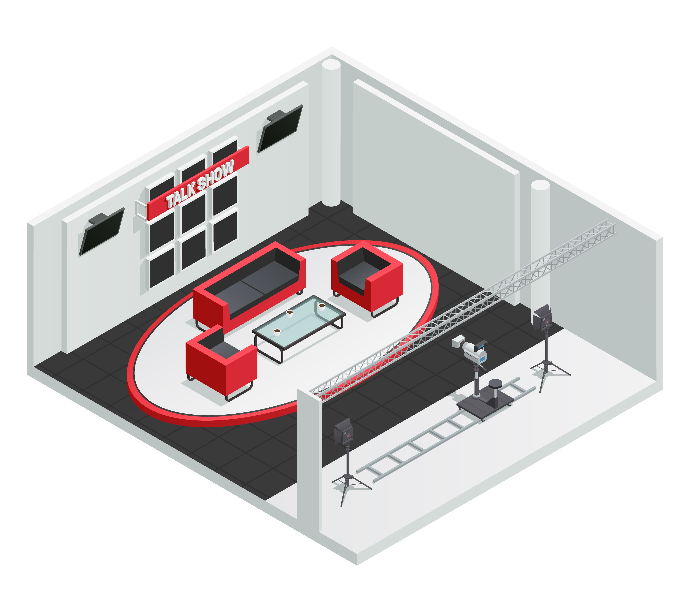

Como escolher a agência de eventos ideal para sua ocasião?

Introdução:
Organizar um evento é uma tarefa complexa que envolve planejamento detalhado, criatividade e dedicação. Seja um casamento dos sonhos, uma conferência de negócios ou uma festa de aniversário inesquecível, a escolha da agência de eventos certa é fundamental para alcançar o sucesso almejado. Neste conteúdo, guiaremos você através de um processo criterioso para selecionar a agência de eventos ideal, destacando os principais fatores a serem considerados.
1. Definindo os objetivos do evento:
Definir os objetivos do evento é o ponto de partida crucial para o sucesso da organização. Independentemente do tipo de evento que se pretende realizar, seja ele corporativo, social ou educacional, é imprescindível compreender o propósito e o que se espera alcançar ao final.
O primeiro passo na definição dos objetivos é identificar o motivo pelo qual o evento está sendo planejado. Perguntas como "Qual é a finalidade do evento?" e "Por que é importante realizá-lo?" devem ser respondidas claramente. Por exemplo, se o objetivo é promover um evento corporativo, pode-se buscar impulsionar a cultura organizacional, melhorar o engajamento dos funcionários ou lançar um novo produto ou serviço.
Além disso, é fundamental delinear o público-alvo do evento. Quem serão os participantes e convidados? Compreender o perfil do público é essencial para personalizar a experiência e garantir que o evento atenda às suas necessidades e expectativas. Se o evento é direcionado a clientes, parceiros de negócios ou funcionários, as estratégias e abordagens podem variar significativamente.
A partir da definição do público, é importante considerar o tipo de experiência que se deseja proporcionar. Isso inclui pensar na atmosfera do evento, no formato das atividades, no nível de interação entre os participantes, na abordagem da comunicação e na sensação geral que se quer transmitir. Por exemplo, uma festa de aniversário pode ter uma atmosfera descontraída e festiva, enquanto uma conferência pode ser mais formal e informativa.
As metas do evento também devem ser estabelecidas claramente. Elas podem incluir metas quantitativas, como número de participantes, alcance de mídia ou vendas geradas, bem como metas qualitativas, como satisfação dos participantes, feedback positivo, fortalecimento de relacionamentos ou aprimoramento de habilidades. As metas devem ser realistas, mensuráveis e alcançáveis, e sua definição deve guiar toda a organização do evento.
Ao ter clareza sobre os objetivos do evento, é possível buscar a agência de eventos mais adequada para ajudar na organização. Uma agência especializada poderá oferecer sua expertise e experiência para criar um evento personalizado, alinhado aos objetivos definidos. A escolha da agência correta é fundamental para o sucesso, pois ela será responsável por fornecer suporte em áreas como logística, criatividade, marketing, contratação de fornecedores, gerenciamento de crises e muito mais.
Outro aspecto importante ao definir os objetivos é considerar o orçamento disponível. O investimento no evento deve estar alinhado às metas estabelecidas, e a agência selecionada deve ser capaz de trabalhar dentro dessas limitações financeiras.
Além disso, ao planejar um evento, é importante ter em mente a possibilidade de imprevistos e estar preparado para enfrentá-los. Ter objetivos claros permite uma tomada de decisão mais ágil e eficiente diante de desafios inesperados.
Ao longo do processo de organização, é fundamental revisar regularmente os objetivos do evento para garantir que todas as ações tomadas estejam alinhadas com eles. Se necessário, ajustes podem ser feitos para melhor atender às metas estabelecidas.
Em resumo, a definição dos objetivos do evento é uma etapa fundamental e complexa do planejamento, que requer análise cuidadosa, consultas internas e possivelmente a orientação de especialistas. Compreender o propósito do evento, o público-alvo, o tipo de experiência desejada e as metas a serem alcançadas são pilares que sustentam a organização de um evento bem-sucedido. Ter clareza sobre esses elementos também permite a escolha adequada da agência de eventos, que desempenhará um papel vital na execução das ações necessárias para transformar o evento planejado em uma realidade memorável e impactante.
2. Pesquisa e referências:
Realizar uma pesquisa detalhada para encontrar agências de eventos conceituadas na região ou com experiência em eventos similares ao que se está planejando é um processo fundamental para garantir o sucesso e a qualidade do evento. Existem diversas maneiras de conduzir essa pesquisa, e é importante utilizar diferentes fontes para obter uma visão completa do mercado e das opções disponíveis. Aqui estão algumas estratégias para realizar essa pesquisa:
Consultar amigos, colegas ou parceiros de negócios: Uma das formas mais confiáveis de encontrar agências de eventos é por meio de recomendações de pessoas que já realizaram eventos bem-sucedidos. Perguntar a amigos, colegas de trabalho ou parceiros de negócios que tenham experiência nessa área pode fornecer insights valiosos e indicações de agências confiáveis.
Pesquisar na internet: A internet é uma rica fonte de informações sobre agências de eventos. Realizar pesquisas em mecanismos de busca com termos relevantes, como "agências de eventos na região" ou "agências de eventos para festas corporativas", ajudará a encontrar diversas opções disponíveis.
Redes sociais: As redes sociais também são uma excelente plataforma para encontrar agências de eventos conceituadas. Grupos e comunidades relacionados a eventos, festas e negócios podem ser úteis para obter recomendações e feedback de clientes anteriores.
Plataformas de avaliações: Sites especializados em avaliações de empresas e serviços, como o Google Maps, Yelp, Trustpilot e Facebook, podem oferecer insights valiosos sobre a reputação e a qualidade das agências de eventos. Verificar as avaliações e comentários de clientes anteriores ajuda a ter uma ideia da experiência proporcionada por cada agência.
Feiras e eventos do setor: Participar de feiras e eventos do setor de eventos é uma oportunidade de conhecer pessoalmente várias agências e empresas relacionadas ao ramo. Nessas ocasiões, é possível estabelecer contatos, fazer perguntas e obter mais informações sobre o trabalho das agências.
Entrevistar agências selecionadas: Após fazer uma lista de agências promissoras, é importante entrar em contato com cada uma delas para agendar entrevistas ou reuniões. Durante esses encontros, é possível discutir detalhes do evento planejado, apresentar os objetivos, orçamento e outros requisitos, além de verificar a experiência da agência em eventos similares.
Verificar portfólio e casos de sucesso: Ao pesquisar agências de eventos, é recomendado verificar seus portfólios e casos de sucesso. Isso permite avaliar o estilo de trabalho da agência, os tipos de eventos que já realizaram e a qualidade das produções.
Pedir referências de clientes anteriores: Solicitar referências de clientes anteriores é uma maneira de obter informações adicionais sobre a reputação e o desempenho da agência. Falar diretamente com clientes que já trabalharam com a agência pode fornecer insights valiosos sobre a experiência geral de trabalhar com ela.
Verificar certificações e prêmios: Agências de eventos conceituadas muitas vezes possuem certificações e podem ter recebido prêmios ou reconhecimentos em sua área de atuação. Verificar essas informações ajuda a garantir que se esteja selecionando uma agência confiável e experiente.
Analisar a proposta e contrato: Após selecionar algumas agências de eventos, é importante analisar suas propostas detalhadamente. A proposta deve conter informações claras sobre os serviços oferecidos, prazos, custos e demais condições. Além disso, ler atentamente o contrato é fundamental para garantir que todos os termos e responsabilidades estejam claros e de acordo com o planejado.
realizar uma pesquisa detalhada para encontrar agências de eventos conceituadas ou com experiência similar ao evento planejado requer dedicação e análise criteriosa. Através de recomendações de pessoas conhecidas, pesquisas na internet, consultas em redes sociais e plataformas de avaliações, participação em feiras e eventos do setor, entrevistas com agências selecionadas e análise de portfólio e casos de sucesso, é possível identificar as melhores opções disponíveis no mercado. A verificação de certificações, prêmios e referências de clientes anteriores também contribui para garantir a confiabilidade e qualidade dos serviços prestados. Ao conduzir essa pesquisa com cuidado, aumentam-se as chances de selecionar uma agência de eventos que seja capaz de atender às expectativas e objetivos estabelecidos para o evento planejado.
3. Verifique a experiência e portfólio:
Avaliar a experiência e o portfólio das agências de eventos é uma etapa crucial no processo de seleção. Uma agência com vasta experiência terá maior probabilidade de oferecer um serviço de qualidade, lidar com desafios e propor soluções eficazes para tornar o evento um sucesso.
Ao analisar o portfólio das agências, é possível ter uma visão clara dos tipos de eventos que elas já organizaram. Verificar se têm experiência em eventos similares ao que está sendo planejado é fundamental, pois isso indica que a agência já possui conhecimento específico sobre o formato e as necessidades desse tipo de evento.
Além disso, o portfólio permite avaliar a qualidade do trabalho realizado pela agência. Observar as fotos, vídeos e descrições dos eventos anteriores fornece insights sobre o nível de criatividade, originalidade e atenção aos detalhes que a agência dedica a cada projeto. Eventos bem executados, com decoração cuidadosa, logística eficiente e programação bem estruturada, refletem a capacidade da agência de fornecer uma experiência memorável para os participantes.
Ao analisar o portfólio, é importante observar também se a agência já lidou com eventos do mesmo porte que o planejado. Se o evento em questão for grande e complexo, é relevante verificar se a agência já organizou eventos de grande escala e se possui a expertise necessária para lidar com os desafios logísticos e operacionais que podem surgir.
Outro ponto importante é verificar se a agência possui experiência em trabalhar com o público-alvo específico do evento. Por exemplo, se o evento é voltado para o setor corporativo, é interessante saber se a agência já organizou eventos empresariais e se compreende as particularidades desse tipo de público.
Além do portfólio, é recomendado solicitar referências de clientes anteriores da agência. Entrar em contato com esses clientes e perguntar sobre suas experiências de trabalho com a agência pode fornecer informações valiosas sobre a qualidade dos serviços prestados e a satisfação geral.
Uma agência com vasta experiência também será capaz de fornecer insights e sugestões para aprimorar o evento planejado. Ela poderá oferecer ideias criativas, soluções para possíveis desafios e orientações sobre o que funciona melhor para o tipo de evento em questão.
A experiência de uma agência também pode ser comprovada por meio de certificações e prêmios recebidos ao longo dos anos. Algumas organizações e associações do setor de eventos concedem reconhecimentos a empresas que se destacam em suas atividades. Verificar essas certificações pode ser mais uma forma de validar a experiência e a competência da agência.
avaliar a experiência e o portfólio das agências de eventos é uma etapa essencial para tomar uma decisão informada e garantir que se esteja contratando uma empresa capaz de organizar um evento de sucesso. Ao verificar a experiência da agência, analisar seu portfólio, solicitar referências de clientes anteriores e buscar certificações e prêmios, é possível identificar aquelas que melhor atendem às necessidades e objetivos do evento planejado. Uma agência com vasta experiência trará a expertise necessária para enfrentar desafios, propor soluções eficazes e proporcionar uma experiência memorável para todos os envolvidos no evento.
4. Reputação e credibilidade:
Avalie a reputação e credibilidade das agências selecionadas. Verifique se possuem certificações, prêmios ou reconhecimentos do setor de eventos. Além disso, pesquise sobre possíveis reclamações ou problemas enfrentados por essas empresas no passado.
Capacidade de personalização:
A capacidade de personalização é um dos aspectos mais importantes a serem considerados ao escolher uma agência de eventos. Cada evento é único, e é fundamental que a agência tenha a habilidade de refletir a identidade e os valores do organizador no evento planejado. Uma agência que oferece soluções personalizadas será capaz de criar uma experiência memorável e alinhada com as preferências e necessidades do cliente.
A flexibilidade é essencial nesse contexto, pois muitas vezes os eventos podem sofrer mudanças ao longo do planejamento. Uma agência com capacidade de adaptação poderá lidar de forma eficiente com imprevistos e ajustar o evento conforme necessário, garantindo que tudo esteja alinhado com as expectativas do cliente.
A criatividade é outro atributo crucial. Uma agência criativa trará novas ideias e abordagens originais para o evento, tornando-o mais único e surpreendente. A personalização envolve pensar fora da caixa e buscar soluções inovadoras que impressionem os participantes.
Para avaliar a capacidade de personalização de uma agência, é recomendado revisar casos de sucesso anteriores e verificar como ela lidou com diferentes tipos de eventos e necessidades específicas de cada cliente. Além disso, uma boa prática é discutir detalhadamente com a agência sobre o evento em questão, compartilhando suas visões, preferências e expectativas para garantir que ela esteja disposta a atender a essas demandas de forma personalizada.
Orçamento e transparência:
Definir um orçamento claro é fundamental antes de iniciar o processo de seleção da agência de eventos. Ter uma ideia clara dos recursos financeiros disponíveis para o evento ajudará a identificar agências que estejam dentro das possibilidades financeiras.
Ao compartilhar o orçamento com as agências em consideração, é importante que elas sejam transparentes em relação aos seus custos e honorários. Evitar agências que não fornecem informações claras sobre os custos envolvidos e escondem taxas adicionais é essencial para evitar surpresas desagradáveis durante o planejamento ou após o evento.
É válido ressaltar que escolher a agência apenas com base no preço mais baixo pode não ser a melhor decisão. Agências com valores significativamente abaixo do mercado podem estar comprometendo a qualidade do serviço ou não estar incluindo todos os elementos necessários para o evento ser bem-sucedido.
Um processo de orçamento transparente incluirá a descrição detalhada de todos os serviços oferecidos, os custos associados a cada um deles e a forma de pagamento. Dessa forma, o cliente terá uma compreensão completa dos valores envolvidos e poderá tomar uma decisão informada.
Equipe e recursos:
A equipe da agência de eventos desempenha um papel fundamental na organização e execução do evento. É essencial verificar o tamanho da equipe e se ela possui profissionais especializados em diferentes áreas relevantes, como produção, logística, marketing, atendimento ao cliente, entre outras.
Uma equipe bem estruturada e diversificada permitirá que a agência lide com diversas demandas do evento, garantindo uma abordagem abrangente e eficiente. Por exemplo, uma equipe de produção talentosa será responsável pela parte criativa e estética do evento, enquanto uma equipe de logística eficiente garantirá o bom funcionamento e a organização impecável.
Além disso, é importante certificar-se de que a agência possui os recursos necessários para realizar o evento com sucesso. Isso inclui parcerias com fornecedores confiáveis, acesso a tecnologias relevantes, materiais de qualidade e infraestrutura adequada para lidar com eventos de diferentes portes.
Para avaliar a equipe e os recursos da agência, é possível realizar reuniões presenciais ou virtuais com os principais membros da equipe envolvida no projeto do evento. Essas reuniões permitirão conhecer melhor os profissionais e entender como eles trabalham em conjunto para entregar um serviço de qualidade.
Visite eventos organizados pela agência:
Se possível, participar de eventos já organizados pela agência é uma das melhores formas de avaliar sua qualidade e capacidade de entrega. Ao vivenciar um evento produzido pela agência, é possível observar a organização, a criatividade e a atenção aos detalhes que ela emprega em suas produções.
Durante a visita, observe como a agência lida com aspectos como a recepção dos convidados, a decoração, a logística, a programação e o entretenimento oferecido. Isso ajudará a ter uma visão completa do trabalho da agência e a verificar se a qualidade e o estilo do evento estão alinhados com suas expectativas.
Aproveite a oportunidade para conversar com os participantes do evento e obter feedback direto sobre suas experiências. Pergunte sobre a organização geral, a qualidade dos serviços oferecidos e a satisfação com a experiência como um todo. O feedback dos participantes pode ser valioso para ajudar na tomada de decisão.
Contrato e garantias:
Antes de fechar o acordo com a agência escolhida, é essencial revisar cuidadosamente o contrato proposto. O contrato deve incluir todos os detalhes e acordos discutidos durante o processo de planejamento, como os serviços prestados, o prazo de entrega, o orçamento, as responsabilidades e quaisquer cláusulas específicas.
Certifique-se de que todas as informações importantes estão corretamente especificadas no contrato para evitar mal-entendidos ou conflitos futuros. Uma agência confiável estará disposta a fornecer um contrato claro e detalhado, com informações completas sobre o escopo do trabalho.
Outro ponto importante é verificar se o contrato inclui garantias de qualidade e prazos. As garantias podem assegurar ao cliente que a agência está comprometida em entregar um evento de alta qualidade, atendendo a todas as expectativas acordadas.
É importante também verificar se o contrato inclui cláusulas referentes a possíveis penalidades em caso de descumprimento dos termos acordados. Isso pode fornecer uma proteção adicional ao cliente, caso haja algum problema durante a execução do evento.
Química e comunicação:
Por fim, considerar a química e a comunicação com a equipe da agência é fundamental para o sucesso da parceria. É essencial trabalhar com profissionais com os quais você se sinta à vontade, confie e consiga se comunicar de forma clara e aberta.
Uma boa comunicação é a base para uma colaboração bem-sucedida. A agência deve ser receptiva às ideias e necessidades do cliente, buscando sempre entender seus objetivos e desejos para poder traduzi-los em ações concretas.
Além disso, a química entre as partes envolvidas é crucial para que a colaboração seja harmoniosa e produtiva. Trabalhar com uma equipe que compartilha os mesmos valores, está alinhada com a visão do evento e demonstra entusiasmo pelo projeto torna todo o processo mais prazeroso e eficiente.
Realizar reuniões presenciais ou virtuais com a equipe da agência antes de fechar o contrato é uma forma de avaliar a comunicação e a química entre as partes. Durante essas interações, é possível discutir detalhes do evento, trocar ideias e esclarecer qualquer dúvida.
ao selecionar uma agência de eventos, a capacidade de personalização, o orçamento e a transparência, a equipe e os recursos disponíveis, a visita a eventos organizados pela agência, o contrato e as garantias oferecidas, e a química e a comunicação com a equipe são fatores fundamentais a serem considerados. Esses aspectos garantirão que a agência escolhida seja capaz de criar um evento personalizado, dentro das expectativas financeiras, bem organizado, com garantias de qualidade e em uma parceria produtiva e agradável com o cliente. Ao avaliar cada um desses pontos cuidadosamente, a probabilidade de sucesso do evento será significativamente maior.
conclusão
Os festivais e shows são eventos musicais repletos de magia e paixão, que reúnem pessoas de diferentes origens e gostos musicais para celebrar a música e a arte. Neste artigo, exploramos diversas ideias criativas para atrações musicais, a fim de tornar esses eventos verdadeiramente inesquecíveis para o público. Desde colaborações surpreendentes até projeções audiovisuais imersivas e artistas de rua talentosos, cada sugestão tem o poder de enriquecer a experiência dos espectadores e proporcionar momentos únicos e memoráveis.
As colaborações surpreendentes entre artistas de gêneros musicais distintos trazem uma nova dimensão aos festivais e shows, gerando conexões emocionais com o público e apresentando novas sonoridades que ampliam os horizontes musicais dos participantes. Essas parcerias únicas e imprevisíveis podem se tornar os destaques dos eventos, sendo comentadas e lembradas por muito tempo após o encerramento.
As performances acústicas intimistas são verdadeiros tesouros em meio à grandiosidade dos festivais. Proporcionam um momento de introspecção e proximidade entre os artistas e o público, permitindo que as emoções fluam em sua forma mais pura. Essas apresentações íntimas criam uma atmosfera única de cumplicidade e empatia, onde as músicas ganham uma nova dimensão e profundidade.
As bandas cover de sucesso são uma fonte inesgotável de entretenimento e nostalgia para o público. Ao recriarem fielmente os sucessos de artistas famosos, essas bandas despertam memórias afetivas e levam o público a uma viagem no tempo, relembrando momentos especiais ao som de suas músicas favoritas. Essas performances cativantes criam uma atmosfera de alegria e animação, unindo gerações e estilos musicais em uma só celebração.
As projeções audiovisuais imersivas transformam o cenário do festival ou show em uma experiência visualmente deslumbrante e sincronizada com a música. Com o uso de tecnologias de mapeamento de projeção, é possível criar um espetáculo visual único, que amplia a narrativa das performances dos artistas e transporta o público para um mundo artístico hipnotizante. Essas projeções se tornam uma verdadeira obra de arte em movimento, estimulando os sentidos e criando um ambiente envolvente e mágico.
As áreas interativas de música proporcionam ao público a oportunidade de se envolver ativamente com a música e a criação artística. As estações de DJ amadoras permitem que os fãs experimentem a arte de mixar músicas e vivenciem a sensação de estar no comando da pista de dança. A disponibilização de instrumentos musicais convida os participantes a expressarem sua criatividade e a compartilharem momentos musicais únicos com outros entusiastas. Essas experiências interativas fortalecem a conexão entre os espectadores e a música, permitindo que eles se tornem protagonistas de sua própria jornada musical.
Os artistas de rua trazem consigo a autenticidade e a essência da cultura local e global para os festivais e shows. Suas apresentações espontâneas e cheias de energia adicionam um toque de diversidade e originalidade ao evento. Ao permitir que artistas de rua talentosos se apresentem em diferentes áreas do festival, os organizadores proporcionam aos participantes um encontro com a arte urbana e a expressão cultural que enriquecem a experiência de todos os presentes.
Em suma, as ideias para atrações musicais em festivais e shows apresentadas neste artigo têm o poder de transformar esses eventos em experiências verdadeiramente memoráveis e enriquecedoras. Cada sugestão contribui para a diversidade, a inovação e a autenticidade que são essenciais para a essência dos festivais e shows. Ao pensar além das apresentações tradicionais, os organizadores têm a oportunidade de criar momentos únicos e mágicos, onde a música transcende os limites do palco e se torna uma verdadeira celebração da arte e da vida. O poder da música é imenso, e quando combinado com ideias criativas e ousadas, torna-se uma força capaz de unir pessoas, criar memórias duradouras e inspirar gerações. Portanto, que cada festival e show se torne uma experiência inesquecível, repleta de emoções e sonhos, onde a música se torna a protagonista de um espetáculo grandioso que fica para sempre na memória e no coração de todos os presentes.